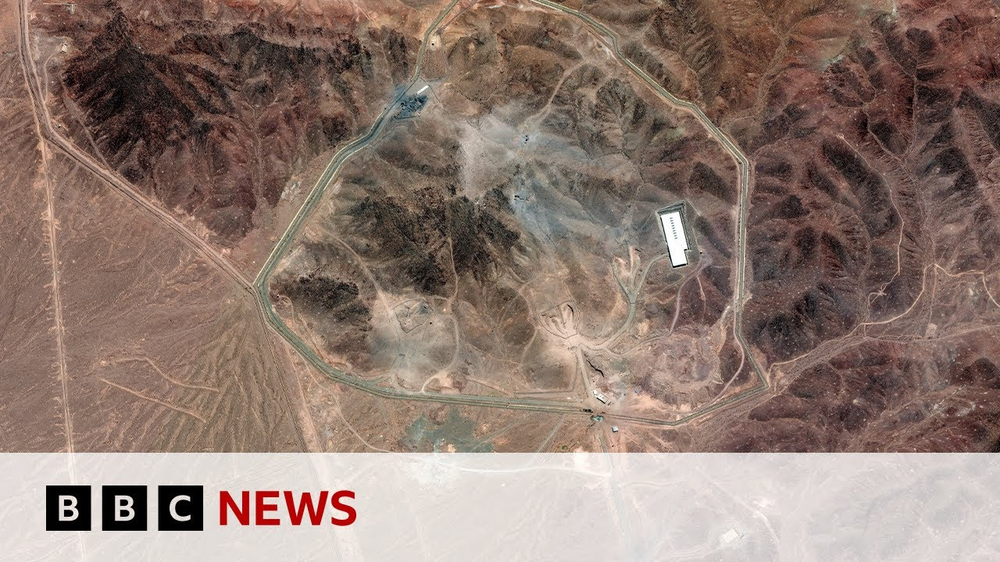

【2025-06-27 BBC News 美国CIA称情报显示伊朗核计划“严重受损”】
Summary: The CIA director states U.S. strikes severely damaged Iran's nuclear program, setting it back years, while Israeli assessments agree. Conflicting Pentagon leaks suggest a shorter delay. U.S. Defense Secretary criticizes media for sharing preliminary reports. Meanwhile, Trump publicly supports Netanyahu amid legal troubles, and violence escalates in the West Bank. Tehran shows signs of normalcy post-ceasefire, but tensions linger.
摘要： 中情局局长称美国空袭严重破坏伊朗核计划，使其倒退数年，以色列评估结果一致。五角大楼泄密文件则称仅拖延数月。美国防部长批评媒体披露初步报告。与此同时，特朗普公开支持内塔尼亚胡应对法律纠纷，西岸暴力升级。德黑兰停火后表面恢复常态，但深层紧张仍在。

⏱️ Estimated Reading Time: 10 min
📚 六级生词 📚 雅思生词 📚 托福生词 📚 专八生词 📚 SAT生词 📚 考研生词 📚 GRE生词 📚 高考生词
Well, the United States' top intelligence official, the CIA director John Ratcliffe, says new intelligence suggests that the American strikes on the Iranian nuclear sites had left them severely damaged and that Iran's nuclear program could take years to rebuild.
美国最高情报官员、中情局局长约翰·拉特克利夫表示，新情报显示美国对伊朗核设施的袭击使其严重受损，伊朗核计划可能需要数年才能重建。
Several officials within the Trump administration, including the president himself, have insisted that the sites were, in his words, totally obliterated.
特朗普政府多名官员，包括总统本人，坚称这些设施已被“彻底摧毁”。
Well, meanwhile, an Israeli assessment says that the U.S. strikes on Iran's nuclear facilities combined with its own attacks have set back Iran's ability to develop nuclear weapons by years.
与此同时，以色列评估认为，美国对伊朗核设施的打击加上以方攻击，使伊朗发展核武器的能力倒退数年。
It comes off the back of a leaked Pentagon assessment, suggesting Iran's program had probably only been set back by a few months rather than years.
此前五角大楼一份泄密评估称，伊朗核计划可能仅拖延了数月而非数年。
Well, the U.S. Defense Secretary Pete Hegseth criticized those American media outlets for carrying that initial assessment by the Pentagon intelligence agency saying that it was preliminary.
美国防部长皮特·赫格塞斯批评美媒报道五角大楼情报机构的初步评估，称其不完整。
So what do leakers do?
泄密者有何目的？
They have agendas.
他们别有意图。
And what do they do?
他们会怎么做？
Do they share the whole information or just the part that they want to introduce?
他们会分享全部信息，还是只披露想公开的部分？
And when they introduce that preliminary report that's deemed to be low assessment, you know what a low assessment means?
当他们公开这份被视为低可信度的初步报告时，你知道“低可信度”意味着什么吗？
Low confidence in the data in that report.
对报告中数据的信心不足。
Why is there low confidence?
为何信心不足？
Because all of the evidence of what was just bombed by 12, 30,000 pound bombs is buried under a mountain devastated and obliterated.
因为被12枚3万磅炸弹摧毁的证据已埋入废墟。
I bullish Pete Hegseth there.
这是皮特·赫格塞斯的强硬表态。
Well, let's bring in my colleague, Dan Johnson, who is live with us from our Jerusalem Bureau.
现在连线我在耶路撒冷分部的同事丹·约翰逊。
Dan, while the rally goes on about the extent of the American damage on Iran's nuclear sites, Donald Trump has also weighed in on Benjamin Netanyahu's political and it did legal woes at the moment.
丹，关于美国对伊朗核设施破坏程度的争论持续之际，特朗普也评论了内塔尼亚胡当前的政治及法律困境。
Tell us more.
请详细说明。
Yes, this is a posting by the U.S. President on his Truth Social Network.
这是美国总统在其社交平台“Truth Social”上的发文。
He's written a huge long post, quite extraordinary, writing their his support for Benjamin Netanyahu.
他写了一篇异常长的帖子，表达对内塔尼亚胡的支持。
Donald Trump said that Netanyahu was a great wartime prime minister, a warrior who was facing a ridiculous witch hunt.
特朗普称内塔尼亚胡是伟大的战时总理，正面临荒谬的政治迫害。
He said they'd been through hell together and that Netanyahu could not have been better, sharper or stronger.
他说他们曾共渡难关，内塔尼亚胡的表现无可挑剔。
The U.S. President again talked about the elimination of Iran's nuclear weapons and said that they'd been fighting for the survival of Israel.
特朗普再次提到消除伊朗核武器，称他们为以色列的生存而战。
He said that he just found out Netanyahu would be summoned back to court next week.
他提到内塔尼亚胡下周将再次出庭。
And that is the latest stage of a corruption trial that Benjamin Netanyahu has been facing.
这是内塔尼亚胡所涉腐败案的最新进展。
These allegations that he's been facing over the last few years, that case has been going through the courts in recent months.
他近年面临的指控已进入法庭审理阶段。
The Prime Minister's had to give evidence there.
总理本人已出庭作证。
Donald Trump says that that is politically motivated, a horror show, which he says should be cancelled, or Benjamin Netanyahu should be pardoned for.
特朗普称这是政治操弄的“恐怖秀”，应撤销或赦免。
He's called it a travesty of justice and said that after saving Israel, the U.S. would now do what it could to save Benjamin Netanyahu.
他称这是司法不公，并说美国在拯救以色列后，将尽力拯救内塔尼亚胡。
And Dan, while the focus has been very much on Iran, of course, over the last two weeks, there are several other hotspots of hostility in the region, not least in the West Bank, the occupied West Bank, where there has been renewed violence and indeed fatalities there.
丹，尽管过去两周焦点在伊朗，该地区其他冲突热点也在升级，尤其是西岸的暴力与伤亡。
Give us the latest on that.
请提供最新情况。
Yes, all quiet overnight in terms of Israel Iran.
以伊局势昨夜平静。
That ceasefire does seem to be holding, but still there is loss of life in Gaza and also in the West Bank, something that hasn't had a lot of attention over recent weeks.
停火似乎持续，但加沙和西岸仍有伤亡，这些近期未受关注。
There's something that has been ramping up ever since the October 7th attacks.
自10月7日袭击以来，局势不断恶化。
Israeli settlers who are raiding Palestinian villages, setting fire to homes and cars, and this is what we saw last night.
以色列定居者袭击巴勒斯坦村庄，焚毁房屋车辆，昨晚再现此类事件。
Dozens of masked figures ransacking a village, a town just to the northeast of Ramallah in the occupied West Bank.
数十名蒙面人洗劫了拉马拉东北部一村庄。
There were carrying sticks.
他们手持棍棒。
There were setting fire to vehicles and to Palestinian homes.
焚烧车辆与巴勒斯坦房屋。
The Israeli military says that soldiers were called to respond to a confrontation there, both sides throwing stones at each other.
以军称士兵介入冲突，双方互掷石块。
The Israeli military says it soldiers came under attack and that's why they opened fire.
以军称士兵遭袭后开火。
Three Palestinians were shot dead there, at least seven were injured.
三名巴勒斯坦人被杀，至少七人受伤。
It's the sort of thing that we've seen repeatedly carried out by Israeli settlers and increasingly over the last few months.
此类定居者行为过去数月愈演愈烈。
So, remind that Palestinian lives are at risk in the West Bank as much as they are in Gaza.
可见西岸巴勒斯坦人与加沙一样面临生命威胁。
Dhanjansan in Jerusalem, thanks very much indeed.
耶路撒冷的丹·约翰逊，非常感谢。
Well, as Dan was saying, the ceasefire with Iran appears to be holding for now.
如丹所言，与伊朗的停火目前持续。
Our Chief International correspondent, Lee Zduzet, is in Tehran.
本台国际首席记者李·兹杜泽特在德黑兰。
She is being allowed to report from there on condition that her reports are not broadcast on BBC Persians, the BBC's Persian service, which broadcasts to the people of Iran.
她获准在当地报道，条件是内容不在BBC波斯语频道播出。
This law is being applied by the Iranian authorities to all international media outlets in Iran.
伊朗当局对所有国际媒体实施此规定。
She says that on the streets of Tehran there is a growing sense of returning to normality.
她称德黑兰街头逐渐恢复常态。
Enormous relief that the bombs have stopped falling.
空袭停止令人如释重负。
You can feel, even hour by hour, the rhythms of this city returning if we can say normal, but that's only on the surface just a short time ago.
城市节奏逐小时恢复，但仅是表象。
I saw a group of young Iranian men and women, all of them, in their running gear.
我看到一群穿运动服的伊朗青年。
It's a beautiful summer's day here.
今日夏日晴好。
Traffic is starting to return.
交通逐渐恢复。
The first international flights will happen today.
今日将恢复国际航班。
The internet is restored so Iranians can use many social media apps or ban tier at all times.
网络恢复，伊朗人可访问部分社交应用。
So they use VPNs to get around them.
但通常需借助VPN绕过限制。
So conversations are starting online, some four, and some against the governments.
网络讨论重启，观点各异。
But you can see on the streets of Tehran there are still cafes and shops and government offices which are still shut.
但德黑兰街头部分咖啡馆、商店及政府机构仍关闭。
So many people left this city when Israel started attacking.
以方袭击后许多人离开。
And some of them haven't come back yet.
部分人尚未返回。
They want to be sure that this ceasefire is going to hold.
他们需确认停火稳固。
The officials here are maintaining a very defiant tone.
官员仍保持强硬态度。
The president, Masoud Peshashkian has sent a message to the nation last night, hailing the resilience and the defiance.
总统佩沙什基安昨夜向全国致辞，赞扬民众坚韧。
Last night we went to a concert in a landmark square here in the city.
昨夜我们参加了市中心标志性广场的音乐会。
Masoud Peshashkian has had the square, freedom square.
佩沙什基安称该广场为“自由广场”。
It's where Iranians often gather at defining moments in history.
伊朗人常在此聚集见证历史。
And underneath this beautiful iconic shrine of the soaring white marble, the Tehran Symphony Orchestra was playing.
白色大理石穹顶下，德黑兰交响乐团演奏。
And Iranians came and talking to them, some supported the government, some didn't support the government.
民众交谈中观点不一。
But they were all there to listen to the patriotic songs and saying, really worrying for this moment.
但都聆听爱国歌曲，表达对时局的忧虑。
And still, the emotions are still raw, worried most of all about their future of their country.
情绪仍敏感，最担忧国家未来。
And yes, the conversations will start in public and private.
公私场合的讨论将展开。
But right now Iranians are just trying to come to terms with the enormity of what has been happening here.
但此刻伊朗人正努力接受近期剧变。
Lees to set in Tehran.
李·兹杜泽特在德黑兰报道。